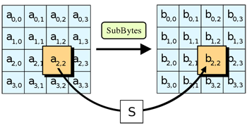

En este proceso, cada byte del state se cambia usando cajas-S de Rijndael. La caja-S utilizada viene determinada por una función matemática sobre el campo de Galois (28), el cual es usado por tener propiedades de no linealidad. Una vez se tiene la caja-S a usar, la transformación del byte viene dada por los dos dígitos hexadecimales del mismo, los cuales servirán como fila y columna para elegir el nuevo byte a usar.
